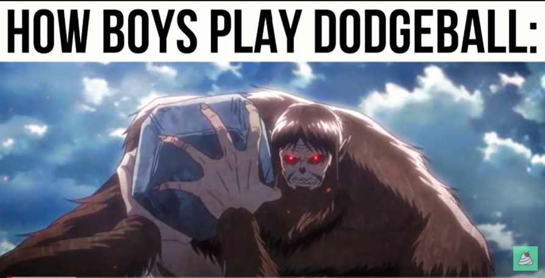
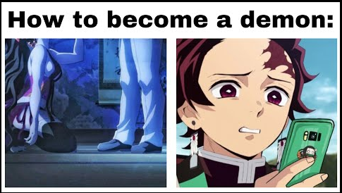
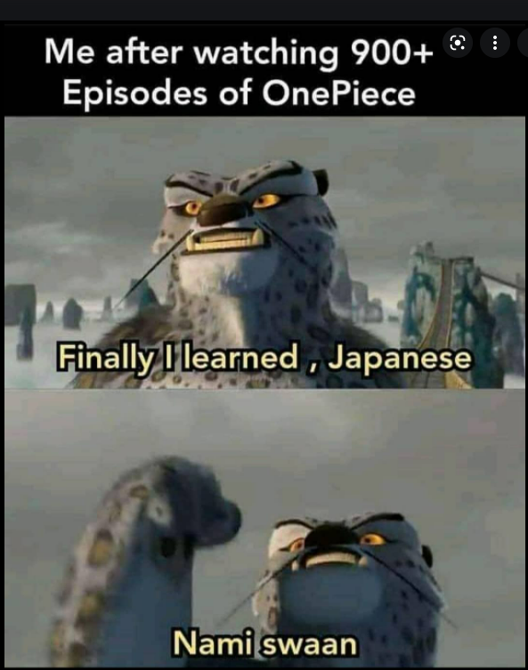

Breaking Bad is an American neo-Western crime drama television series created and produced by Vince Gilligan. The show aired on AMC from January 20, 2008, to September 29, 2013, consisting of five seasons for a total of 62 episodes. It was set and filmed in Albuquerque, New Mexico, and tells the story of Walter White (Bryan Cranston), an underpaid, overqualified, and dispirited high school chemistry teacher who is struggling with a recent diagnosis of stage-three lung cancer. Walter turns to a life of crime, partnering with his former student Jesse Pinkman (Aaron Paul), by producing and distributing crystal meth to secure his family's financial future before he dies, while navigating the dangers of the criminal underworld. According to Gilligan, the title is a Southern colloquialism meaning "to raise hell".
Set in Albuquerque, New Mexico, between 2008 and 2010,[13] Breaking Bad follows Walter White, a meek high school chemistry teacher who transforms into a ruthless player in the local methamphetamine drug trade, driven by a desire to financially provide for his family after being diagnosed with terminal lung cancer. Initially making only small batches of meth with his former student Jesse Pinkman in a rolling meth lab, Walter and Jesse eventually expand to make larger batches of a special blue meth that is incredibly pure and creates high demand. Walter takes on the name "Heisenberg" to mask his identity. Because of his drug-related activities, Walter eventually finds himself at odds with his family, the Drug Enforcement Administration (DEA) through his brother-in-law Hank Schrader, the local gangs, the Mexican drug cartels and their regional distributors, putting his and his family's lives at risk.
Character list:
| Season number | Number of episodes |
|---|---|
| 1 | 7 |
| 2 | 13 |
| 3 | 13 |
| 4 | 13 |
| 5 | 16 |
Attack on Titan (Japanese: 進撃の巨人, Hepburn: Shingeki no Kyojin, lit. "The Advancing Giants") is a Japanese manga series written and illustrated by Hajime Isayama. It is set in a world where humanity lives inside cities surrounded by three enormous walls that protect them from the gigantic man-eating humanoids referred to as Titans; the story follows Eren Yeager, who vows to exterminate the Titans after a Titan brings about the destruction of his hometown and the death of his mother. Attack on Titan was serialized in Kodansha's monthly shōnen manga magazine Bessatsu Shōnen Magazine from September 2009 to April 2021, with its chapters collected in 34 tankōbon volumes.
An anime television series was produced by Wit Studio (seasons 1–3) and MAPPA (season 4). A 25-episode first season was broadcast from April to September 2013, followed by a 12-episode second season broadcast from April to June 2017. A 22-episode third season was broadcast in two parts, with the first 12 episodes airing from July to October 2018 and the last 10 episodes airing from April to July 2019. A fourth and final season premiered in December 2020, airing 16 episodes in its first part, with the second part premiering in January 2022.
Demon Slayer: Kimetsu no Yaiba (鬼滅の刃, Kimetsu no Yaiba, "Blade of Demon Destruction"[4]) is a Japanese manga series written and illustrated by Koyoharu Gotouge. It follows teenage Tanjiro Kamado, who strives to become a demon slayer after his family was slaughtered and his younger sister Nezuko turned into a demon. It was serialized in Shueisha's shōnen manga magazine Weekly Shōnen Jump from February 2016 to May 2020, with its chapters collected in twenty-three tankōbon volumes. It has been published in English by Viz Media and simultaneously published by Shueisha on their Manga Plus platform.
A twenty-six episode anime television series adaptation produced by Ufotable aired in Japan from April to September 2019. A sequel film, Demon Slayer: Kimetsu no Yaiba – The Movie: Mugen Train, was released in October 2020 and became the highest-grossing anime film and Japanese film of all time. A second season of the anime series, readapting the "Mugen Train" arc seen in the film in seven episodes, and covering the "Entertainment District" arc from the manga in eleven episodes, aired from October 2021 to February 2022. A third season covering the "Swordsmith Village" arc has been announced.
One Piece (stylized in all caps) is a Japanese manga series written and illustrated by Eiichiro Oda. It has been serialized in Shueisha's shōnen manga magazine Weekly Shōnen Jump since July 1997, with its individual chapters compiled into 101 tankōbon volumes as of December 2021. The story follows the adventures of Monkey D. Luffy, a boy whose body gained the properties of rubber after unintentionally eating a Devil Fruit. With his pirate crew, the Straw Hat Pirates, Luffy explores the Grand Line in search of the world's ultimate treasure known as the "One Piece" in order to become the next King of the Pirates.
The manga spawned a media franchise, having been adapted into a festival film produced by Production I.G, and an anime series produced by Toei Animation, which began broadcasting in Japan in 1999. Additionally, Toei has developed fourteen animated feature films, one OVA and thirteen television specials. Several companies have developed various types of merchandising and media, such as a trading card game and numerous video games. The manga series was licensed for an English language release in North America and the United Kingdom by Viz Media and in Australia by Madman Entertainment. The anime series was licensed by 4Kids Entertainment for an English-language release in North America in 2004, before the license was dropped and subsequently acquired by Funimation in 2007.